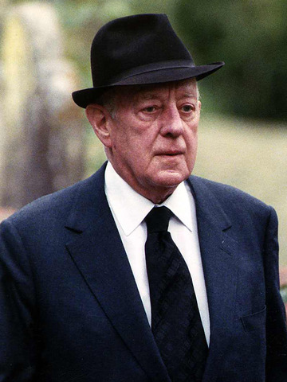
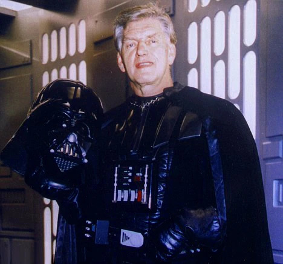

Mark Hamill - Luke Skywalker
Mark Hamill es un actor estadounidense nacido el 25 de septiembre de 1951. Es mundialmente conocido por su papel como Luke Skywalker en Star Wars: Una Nueva Esperanza y el resto de la trilogía original. Antes de Star Wars, Hamill había trabajado en televisión, pero fue este papel el que lanzó su carrera al estrellato. En Una Nueva Esperanza, interpreta a Luke Skywalker, un joven granjero del planeta Tatooine que sueña con aventuras más allá de su mundo. A lo largo de la película, Luke pasa de ser un chico ingenuo a convertirse en un héroe rebelde, guiado por Obi-Wan Kenobi y movido por su deseo de justicia. Su personaje representa el clásico “viaje del héroe”, convirtiéndose en el corazón emocional de la historia. Con este papel, Hamill se transformó en un ícono cultural y en el símbolo de una nueva generación de héroes en el cine.
Alec Guinness - Obi Wan Kenobi
Alec Guinness fue un prestigioso actor británico, nacido el 2 de abril de 1914, con una amplia trayectoria en teatro y cine antes de Star Wars. Ganador de un Premio Óscar y conocido por su versatilidad, Guinness aportó gran prestigio al elenco de Una Nueva Esperanza. En la película, interpreta a Obi-Wan Kenobi, un viejo y sabio caballero Jedi que vive exiliado en el planeta Tatooine. Actúa como mentor de Luke Skywalker, guiándolo en sus primeros pasos con la Fuerza y revelándole verdades sobre su padre. Su personaje es clave para introducir el concepto de los Jedi y la Fuerza, y su presencia aporta una dimensión espiritual y mística a la historia. Aunque al principio fue escéptico sobre el proyecto, su actuación dio profundidad y credibilidad al universo de Star Wars, convirtiéndose en uno de los personajes más recordados de la saga.
David Prowse - Darth Vader
David Prowse fue un actor y culturista británico, nacido el 1 de julio de 1935, conocido principalmente por interpretar a Darth Vader en la trilogía original de Star Wars. Aunque su voz fue reemplazada por James Earl Jones, Prowse fue quien dio vida físicamente al imponente villano, aportando su figura alta y su presencia intimidante. En Star Wars: Una Nueva Esperanza, Prowse interpreta a Darth Vader, un oscuro y temido líder del Imperio Galáctico. Como principal antagonista, Vader se presenta como una figura enmascarada y aterradora, que persigue a los miembros de la Alianza Rebelde y busca destruir la esperanza de aquellos que luchan contra el Imperio. Aunque al principio se muestra como una figura casi invencible, su personaje se va desarrollando a lo largo de la saga, revelando una compleja humanidad detrás de su armadura.

REPARTO